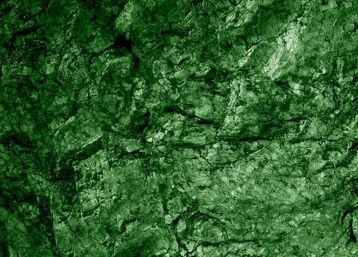
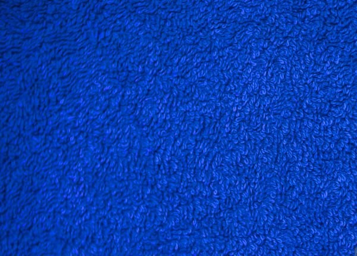
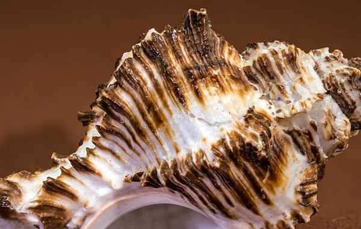
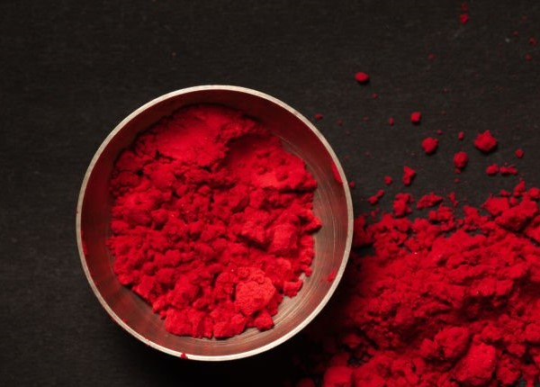
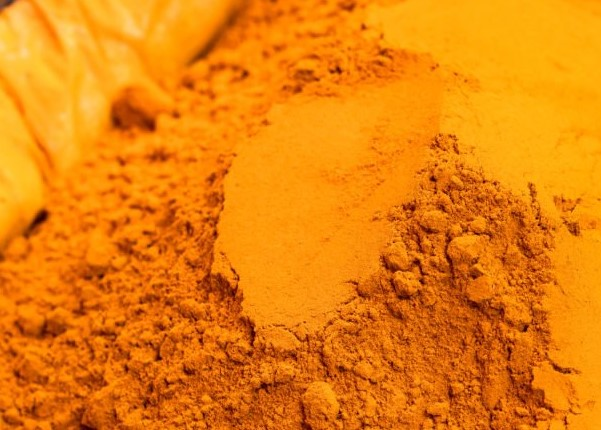

Early green pigments were created from natural minerals and materials. They were used in ancient artwork and decoration to represent plants, nature, and life.

An early synthetic blue pigment known as Egyptian blue. Developed in ancient Egypt, it was used to decorate sculptures, ceramics, tombs, and other objects.

A luxurious purple dye made from sea snails and highly prized in the ancient Mediterranean. Its rarity made purple a symbol of royalty, wealth, and power.

One of the earliest known red pigments, made from naturally occurring earth minerals such as ochre. It was used by prehistoric people for body decoration, cave art, and symbolic markings.

A rich yellow pigment associated with medieval and Renaissance art, used to create warm golden tones in paintings, manuscripts, and religious artwork.
A vivid orange pigment developed in the 19th century, valued for its intense color and widely used in paintings, decorative arts, and later industrial applications.